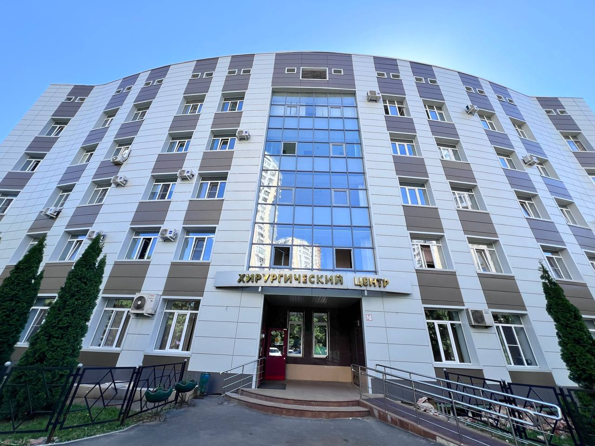

Реутов, ул. Ленина, 2А · поликлиники, стационар, травмпункт
Запись к врачу и вызов на дом — по номеру 122
Единая справочная служба Подмосковья. Звонок бесплатный, номер работает с мобильного и городского.

Сегодня, —
Время на вашем устройстве. Праздничные графики смотрите в новостях.
Как записаться к врачу
По телефону 122
Запись, отмена и перенос приёма. Здесь же — вызов врача на дом.
Чат-бот «Денис» в MAX
Очный приём, телемедицина, вызов врача на дом. Можно закрыть больничный онлайн, если нет жалоб.
Инфомат в поликлинике
Электронный регистратор в холле. Администратор поможет, если впервые.
К кому можно записаться самостоятельно, без направления
Акушер-гинеколог, врач общей практики, оториноларинголог, офтальмолог, педиатр и педиатр участковый, психиатр детский, психиатр-нарколог, психотерапевт, стоматолог-терапевт, стоматолог детский, терапевт и терапевт участковый, уролог, хирург, детский хирург, детский уролог-андролог, врач по спортивной медицине.
Приказ Минздрава МО от 28.10.2015 № 1561. К остальным специалистам — по направлению.
Вызвать врача на дом
122 — для взрослых и детей
Вызовы обслуживает централизованное отделение помощи на дому (ул. Ленина, 2А). Врач приедет, если:
- температура выше 38° и нет сил дойти до поликлиники;
- ОРВИ или грипп во время эпидсезона;
- тошнота, рвота, частый жидкий стул;
- высокое давление с головной болью, головокружением;
- сильная боль в спине или суставах;
- тяжёлое хроническое состояние, инвалидность I–II группы.
На дом не выписывают плановые льготные рецепты, направления на госпитализацию и справки.
Что сказать оператору
- ФИО и возраст больного
- Адрес прописки и где находитесь сейчас, код домофона
- Телефон для связи
- Жалобы — коротко и точно
Обеспечьте врачу доступ в подъезд.
Не хотите ждать дома?
Кабинеты неотложной помощи — без записи:
- Поликлиника № 1, Гагарина, 4 — каб. 109 (новый корпус)
- Поликлиника № 2, Юбилейный, 80 — каб. 125
- Детская, Садовый пр., 7
- Детское отделение, Юбилейный, 17 — каб. 33
Поликлиники и отделения
К какой поликлинике относится ваш дом — уточните по 122 или при прикреплении на Госуслугах. (Список участков на официальном сайте не опубликован — уточнить.)
Ещё пригодится
Прививочные кабинеты
Поликлиника № 1, Гагарина, 4 — будни 8:00–16:00 (перерыв 13–14), сб 9:00–13:00
Поликлиника № 2, Юбилейный, 80 — будни 8:00–19:30, сб 9:00–14:30
Детское отделение, Юбилейный, 17 — пн туберкулинодиагностика, вт и чт вакцинация, 9:00–19:00, после осмотра педиатра
Льготные лекарства
Аптечные пункты «Мособлмедсервиса»:
Юбилейный, 80, 1 этаж — 8:00–19:00, 8 (925) 003-80-69
Гагарина, 4 — 8:00–20:00, 8 (916) 766-07-45
Юбилейный, 15 — 8:00–20:00, 8 (926) 980-31-93
Горячая линия Минздрава МО по лекарствам: 8 (498) 602-18-00
Диспансеризация
Бесплатно по ОМС. Приходите утром, натощак. Если за последние 12 месяцев сдавали анализы — возьмите результаты.
Запись — на uslugi.mosreg.ru или по 122.
Результаты анализов приходят в личный кабинет на Госуслугах.
Платные услуги
Запись: 8 (936) 141-07-27, доб. 2 · 8:00–20:00
| Приём терапевта, первичный | 2 700 |
| Приём терапевта, повторный | 2 300 |
| Приём кардиолога, первичный | 2 700 |
| Приём акушера-гинеколога, первичный | 3 400 |
| ЭКГ со съёмкой и расшифровкой | 1 700 |
| ЭКГ на дому | 3 400 |
| УЗИ органов брюшной полости (дети) | 4 000 |
| МРТ головного мозга | 5 000 |
| МСКТ головного мозга | 5 000 |
| Справка о санации полости рта | 800 |
В каталоге 1 719 позиций в 56 разделах: от анализов и рентгена до стоматологии и медосвидетельствования водителей.
Весь прейскурантРабота в больнице
36 открытых вакансий. 5 минут пешком от станции «Реутово», 10 минут от метро «Новокосино». Служебное жильё или компенсация аренды, программа «Социальная ипотека».
Отдел кадров: ул. Ленина, 2А, корп. 3, каб. 8, 11–13
8 (495) 108-04-48, доб. 1121 · reutcgkb_hrd@mosreg.ru
- Врач-терапевт участковый100 000 ₽
- Врач-педиатр участковый100 000 ₽
- Врач-офтальмолог100 000 ₽
- Врач-невролог75–100 тыс. ₽
- Врач-кардиологот 75 000 ₽
- Врач функциональной диагностики100 000 ₽
- Медсестра операционная50–75 тыс. ₽
- Медсестра участковая55 000 ₽
- Фельдшер50–65 тыс. ₽
- Специалист договорного отделаот 80 000 ₽
Новости
Все новости →- Удар может случиться внезапно — знайте, как распознать
- Почему прививка от гриппа особенно важна людям старшего возраста
- Проверься, пока ничего не болит!
- Сахарный диабет: знать, чтобы действовать
- Больница присоединилась к областной акции «Старт в долголетие 5/57»
- «Горячая линия» по вопросам гриппа и ОРВИ
- В Реутове стартовала прививочная кампания против гриппа
Контакты
ГБУЗ МО «Реутовская клиническая больница»
143964, Московская обл., г. Реутов, ул. Ленина, 2А
От метро «Новокосино» — автобус 17Р, 2 остановки до «Улица Ленина». От МЦД-4 «Реутово» — 6–10 минут пешком.
- Запись и вызов врача
- 122
- Справочная больницы
- +7 (495) 744-62-02
- Платные услуги
- 8 (936) 141-07-27, доб. 2
- Горячая линия главного врача
- +7 (498) 602-03-59, доб. 18013
- Почта
- reutzdrav_mail@mosreg.ru
Главный врач
Линниченко Юрий Валентинович. Приём граждан — ул. Ленина, 2А, корп. 1, каб. 125 (по средам 15:00–18:00 — уточнить).
Контролирующие органы
Минздрав МО +7 (498) 602-03-01
Росздравнадзор по Москве и МО 8 (916) 256-76-76